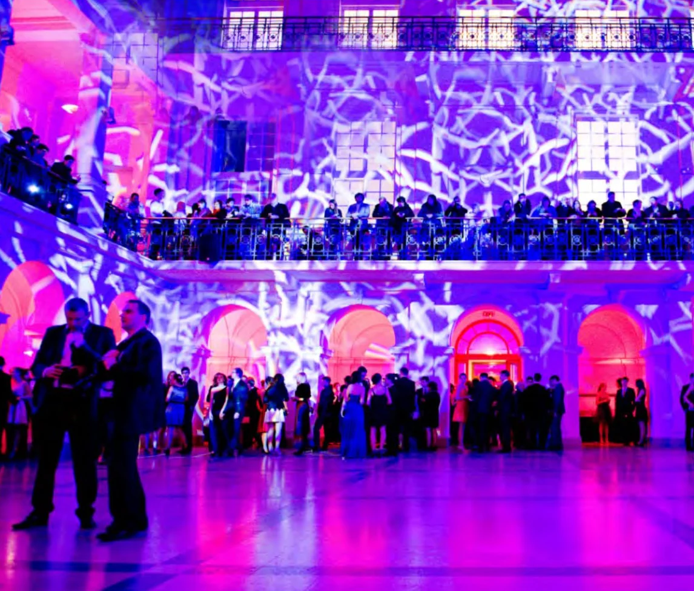

Warszawa
Aula Politechniki Warszawskiej
Aula Politechniki Warszawskiej to idealne miejsce na studniówkę, bo łączy w sobie prestiż, przestronność i wyjątkową atmosferę. Eleganckie wnętrza tworzą doskonałe tło dla tak uroczystego wydarzenia, a nowoczesne zaplecze techniczne pozwala zadbać o perfekcyjne nagłośnienie, oświetlenie i scenografię.
Dzięki doświadczeniu Biurkowski Events aula zmienia się w prawdziwą salę balową – dopracowaną w każdym detalu, efektowną i komfortową dla wszystkich gości.
To połączenie wyjątkowej przestrzeni i profesjonalnej organizacji sprawia, że studniówka staje się niezapomnianym przeżyciem.